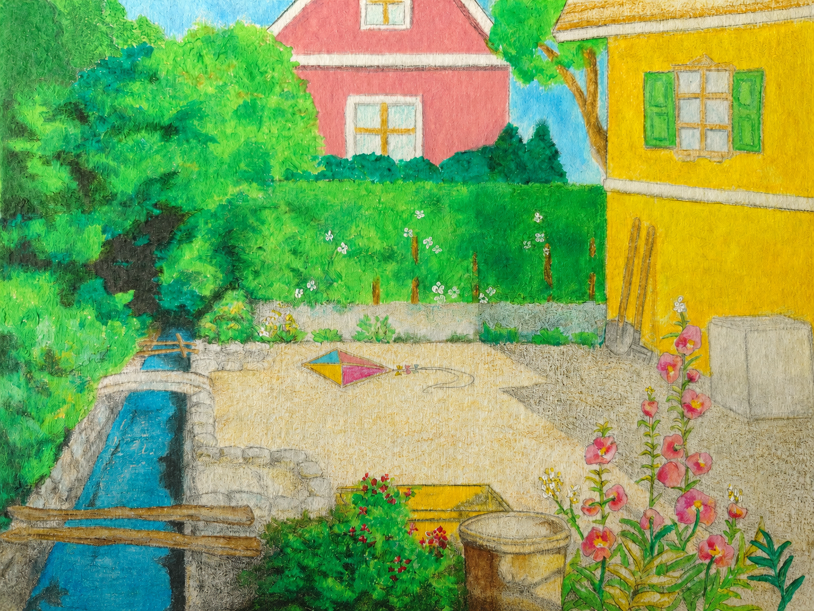
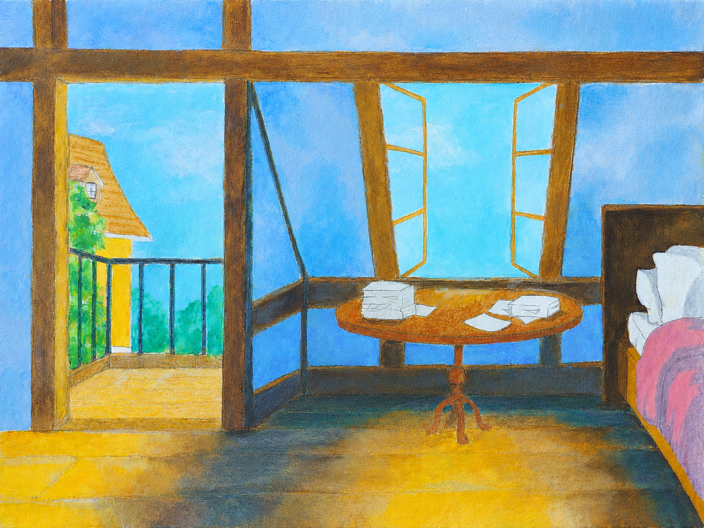
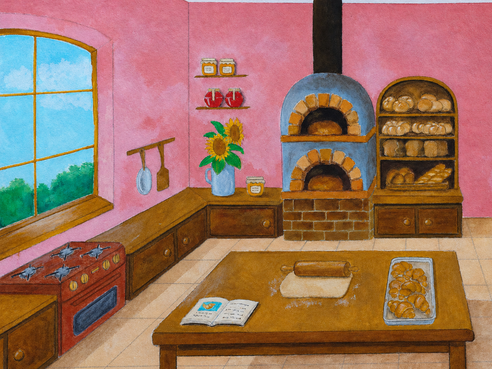
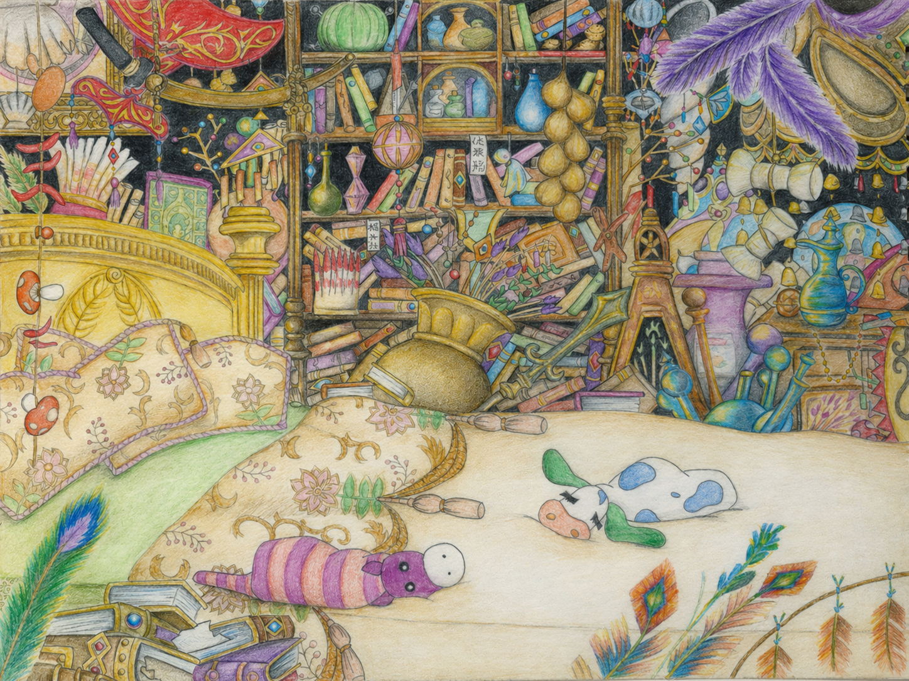

Small Drawings



Drawings

Steps
Based on Studio Ghibli's Spirited Away.
Made with Caran d'Ache Pablo pencils on mixed media paper size A4.
August, 2025.


Journey
Made with Caran d'Ache Pablo pencils and acrylic paint on cold-pressed, fine-grain paper.
21 × 29,7 cm
Escaperoom Series No. 1, April 2026.

Town Square
Made with Caran d'Ache Pablo pencils and acrylic paint on cold-pressed, fine-grain paper.
21 × 29,7 cm
Escaperoom Series No. 2, April 2026.